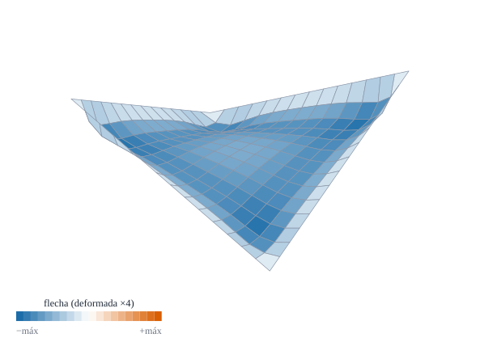
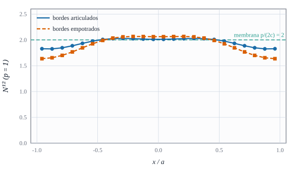

Una lámina que trabaja a cortante puro: teoría de membrana frente a elementos finitos

Figura 33.1: Paraboloide hiperbólico de bordes rectos (\(z=c\,x\,y\), \(c=0{,}5\)) bajo carga vertical uniforme, con los cuatro bordes apoyados. Deformada exagerada ×4 y coloreada por la flecha (el centro desciende). Cálculo calculado.
Por qué una cáscara de pocos centímetros de espesor y forma de silla de montar puede soportar una carga uniforme casi sin flectar
Objetivos y prerrequisitos
Objetivos. Al terminar el tema sabrás:
deducir que un paraboloide hiperbólico \(z=cxy\) bajo carga vertical uniforme soporta la carga con cortante puro\(N^{12}=p/(2c)\) (teoría de membrana);
explicar el reparto en arcos y cables a lo largo de las diagonales;
comparar el resultado de elementos finitos con la membrana y medir la diferencia con la malla y el espesor;
distinguir el efecto de los bordes (articulados o empotrados) de la solución de interior;
calcular las tensiones principales de una cubierta real.
NotaExplicación para ingenieros: dos arcos y dos cables cruzados
Una silla de montar tiene dos diagonales distintas: a lo largo de una la superficie se curva hacia arriba (forma de arco) y a lo largo de la otra hacia abajo (forma de cable colgado). Bajo una carga uniforme hacia abajo, el «arco» trabaja a compresión y el «cable» a tracción, con la misma intensidad. Como no hay nada que flecte, la lámina puede ser delgadísima. En cada punto, el estado de tensión es de cortante puro: si se gira la mirada \(45^\circ\), son tracción y compresión iguales y perpendiculares. Por eso las cubiertas de Candela se pueden hacer de pocos centímetros de espesor.
33.1 Teoría de membrana del hypar
En la teoría de membrana se desprecia la flexión: sólo hay resultantes \(N^{\alpha\beta}\) en el plano tangente. Las ecuaciones de equilibrio (tema D7) son las tangenciales, \(N^{\alpha\beta}{}_{\|\beta}=0\), y la normal, \(N^{\alpha\beta}b_{\alpha\beta}+\hat{\mathbf n}\cdot\mathbf f=0\), con \(\mathbf f\) la carga por unidad de superficie. En un hypar rasante los símbolos de Christoffel son pequeños y la superficie tiene \(b_{11}\simeq b_{22}\simeq0\), \(b_{12}\simeq c\); si \(N^{11}=N^{22}=0\), las ecuaciones tangenciales se reducen a \(\partial N^{12}/\partial x=\partial N^{12}/\partial y=0\) (\(N^{12}\) constante) y la normal queda \(2c\,N^{12}-p=0\):
\[
N^{12}=\frac{p}{2c},\qquad N^{11}=N^{22}=0,\qquad \text{(carga vertical }p\text{ por unidad de planta).}
\tag{33.1}\]
La resultante es uniforme en toda la lámina. Para que exista hacen falta bordes que la absorban: en cada borde recto se necesita una fuerza de borde (de un elemento rígido, o de un arco o cable en el borde) que equilibre el cortante.
Ejemplo 33.1 (Ejemplo resuelto: una cubierta de \(10\times10\) m) Cubierta \(z=c\,x\,y\) en \([-5,5]^2\) m con \(c=0{,}1\) m\(^{-1}\) (la esquina \(x=y=5\) queda a \(z=2{,}5\) m), \(t=50\) mm y carga \(p=1{,}5\) kN/m² (peso propio y nieve, por unidad de planta). Con ecuación 33.1: \[
N^{12}=\frac{1{,}5}{2\cdot0{,}1}=7{,}5\ \text{kN/m}=7{,}5\ \text{N/mm},\qquad \sigma_{\text{cortante}}=\frac{N^{12}}t=\frac{7{,}5}{50}=0{,}15\ \text{MPa}.
\] Las tensiones principales (giradas \(45^\circ\)) son \(\pm\sigma_{\text{cortante}}=\pm\mathbf{0{,}15}\) MPa: una tracción y una compresión de 0,15 MPa, muy por debajo de la resistencia del hormigón. Resultado analítico (teoría de membrana rasante).
En el Ejemplo 33.1, ¿cuánto vale la tensión principal (en valor absoluto) de la cubierta de \(50\) mm de espesor?
Con \(N^{12}\) constante y \(N^{11}=N^{22}=0\), el tensor de resultantes en las diagonales \(\xi=(x+y)/\sqrt2\) y \(\zeta=(x-y)/\sqrt2\) es \(N_{\xi\xi}=N^{12}\) y \(N_{\zeta\zeta}=-N^{12}\): tracción a lo largo de una diagonal y compresión a lo largo de la otra (ecuación 33.1 con \(p>0\) hacia abajo: la diagonal que sube es el arco). La carga baja por el sistema de arcos y cables hasta los bordes.
AdvertenciaDos puntos que suelen confundir
«Casi sin flexión» no es «sin flexión». La membrana pura exige bordes ideales. En el borde real aparecen momentos locales (capa límite) que decaen en una distancia del orden de \(\sqrt{Rt}\).
La fórmula es para láminas rasantes. Si el hypar es muy empinado (\(c\,a\gtrsim1\)), \(b_{11},b_{22}\) y los Christoffel ya no son despreciables y ecuación 33.1 deja de ser exacta; en los casos calculados aquí (\(c\le1\), \(a=1\)) la diferencia del centro sigue siendo del orden del 1 %.
33.3 Elementos finitos
Se discretiza \(z=cxy\) en \([-a,a]^2\) con \(a=1\), \(t=0{,}01\), \(E=10^4\), \(\nu=0{,}3\), \(p=1\) y bordes articulados (\(u_1=u_2=u_3=0\), giros libres: el apoyo compatible con la membrana). Se mide \(N^{12}\) en el centro con las resultantes de los elementos centrales:
\(c\)
\(n\)
\(N^{12}\) (EF)
\(p/(2c)\)
Diferencia
0,25
16
2,0192
2,0
\(+1{,}0\,\%\)
0,25
32
2,0097
2,0
\(+0{,}5\,\%\)
0,5
16
0,9905
1,0
\(-0{,}9\,\%\)
1,0
16
0,4978
0,5
\(-0{,}4\,\%\)
Calculado con este elemento, como media de los cuatro elementos que rodean el centro (el valor de un solo elemento depende de su posición respecto del eje, como se ve en la Figura 33.2, y puede alejarse un 2 % o más). El resultado coincide con la membrana en torno al 1 % y se acerca al refinar la malla. Si se adelgaza la lámina (\(t=0{,}02\), \(0{,}005\), \(0{,}002\) con \(c=0{,}5\), \(n=16\)) el valor oscila entre \(1{,}020\), \(0{,}996\) y \(1{,}002\): la membrana domina más cuanto más delgada es.

Figura 33.2: Resultante \(N^{12}\) a lo largo del eje central (\(y\approx0\)) para \(c=0{,}25\), \(p=1\), \(24\times24\) elementos. En el interior es casi uniforme y próxima a \(p/(2c)=2\) (verde); cerca de los bordes se aparta, más con los bordes empotrados (naranja) que con los articulados (azul). Calculado.
En un hypar rasante \(z=cxy\) con carga uniforme \(p\) por unidad de planta, ¿qué esfuerzos de membrana aparecen?
Sólo cortante \(N^{12}=p/(2c)\), con \(N^{11}=N^{22}=0\)
Tracciones \(N^{11}=N^{22}=p/(2c)\) y cortante nulo
Compresión uniforme isótropa
Ninguno: la carga se soporta sólo por flexión
Con \(b_{11}\simeq b_{22}\simeq0\) y \(b_{12}\simeq c\), la ecuación normal \(2cN^{12}=p\) se cumple con cortante puro. Es el estado que hace tan eficiente esta forma.
33.4 El efecto de los bordes
La solución de membrana (ecuación 33.1) vale en el interior; cerca de los bordes, el apoyo real no puede suministrar exactamente la reacción de membrana y aparece flexión. Con bordes articulados el efecto es pequeño y de poca extensión; con bordes empotrados es mayor (Figura 33.2), porque se impide el giro y hay un momento de empotramiento. Dos consecuencias prácticas: (i) el espesor crece hacia los bordes en muchas cubiertas reales, y (ii) los elementos de borde (nervios, vigas, arcos) se dimensionan con la reacción de membrana más un término de flexión.
TipAplicación real: Félix Candela y el Oceanogràfic de Valencia
ilustrativoObra civil. El paraboloide hiperbólico es la forma de las cubiertas de Candela. En el Oceanogràfic de Valencia (Candela, proyecto de 1997, con los ingenieros Alberto Domingo y Carlos Lázaro) la cubierta del restaurante se compone de cuatro hypar que se intersecan y la de la entrada es un hypar equilátero de 30 m de luz; los textos técnicos lo describen como un caso de acción de membrana, con cargas transmitidas por esfuerzos en el plano. El espesor, según fuentes comerciales, ronda los 6 cm, aunque otra fuente indica 6 cm en los bordes y hasta unos 22 cm en la intersección de los nervios, y no se ha verificado cuál describe cada estructura.
NotaUn poco de historia: Candela y la lámina delgada
Félix Candela (1910–1997) construyó desde los años cincuenta cubiertas de hormigón de pocos centímetros de espesor con formas de paraboloide hiperbólico, como el restaurante Los Manantiales de Ciudad de México (1958), que se cita como precedente de las cubiertas del Oceanogràfic. Wikipedia atribuye al Oceanogràfic un proyecto de Candela con 87 años en 1997. Aquí no se ha podido verificar el resto de la cronología con una fuente especializada: se reproduce sólo lo que las fuentes secundarias coinciden en decir.
Fuentes (secundarias): Saddle roof (Wikipedia); L’Oceanogràfic (Wikipedia). Las fechas de vida y de obra de Candela proceden de lo que resumen esas páginas; no se leyeron fuentes biográficas. Consultado el 23-10-2026.
33.6 Práctica guiada en Julia
TipEjemplo computacional
calculado (1) La cubierta del Ejemplo 33.1. (2) \(N^{12}\) del centro de un hypar para varias pendientes y mallas. (3) El perfil de \(N^{12}\) con bordes articulados y empotrados.
functionhypar_estatico(n, c; t =0.01, E =1.0e4, ν =0.3, p =1.0, a =1.0, apoyo =:articulado) r =paraboloide_recto(c) nodos, conn =malla_rectangular((-a, a), (-a, a), n, n) f = θ -> [0.0, 0.0, -p /geometria_punto(r, θ).sa] # p por unidad de planta K, _, F =ensamblar(r, nodos, conn, E, ν, t; f) fij =Int[]for k in1:size(nodos, 2) x, y = nodos[:, k]ifabs(x) ≈ a ||abs(y) ≈ aappend!(fij, [gdl(k, 1), gdl(k, 2), gdl(k, 3)]) apoyo ==:empotrado &&append!(fij, [gdl(k, 4), gdl(k, 5)])endend (r, nodos, conn, resolver_estatica(K, F, unique(fij)))end# N¹² de los elementos centrales (media de los que están a ambos lados del eje y = 0)functionn12_centro(n, c; t =0.01, E =1.0e4, ν =0.3, kw...) r, nodos, conn, u =hypar_estatico(n, c; t, E, ν, kw...) vals =Float64[]foreinaxes(conn, 2) X = nodos[:, conn[:, e]] xc = (X[1, 1] + X[1, 2]) /2; yc = (X[2, 1] + X[2, 4]) /2 (abs(xc) <=1.0/ n *1.001&&abs(yc) <=1.0/ n *1.001) &&push!(vals, deformaciones_medias(r, nodos, conn, e, u, E, ν, t).N[3])endsum(vals) /length(vals)end[(c = c, n = n, N12_EF =n12_centro(n, c), teoría =1/ (2c)) for (c, n) in ((0.25, 16), (0.25, 32), (0.5, 16), (1.0, 16))]
4-element Vector{@NamedTuple{c::Float64, n::Int64, N12_EF::Float64, teoría::Float64}}:
(c = 0.25, n = 16, N12_EF = 2.0192332270226747, teoría = 2.0)
(c = 0.25, n = 32, N12_EF = 2.009741692492367, teoría = 2.0)
(c = 0.5, n = 16, N12_EF = 0.9905409560932471, teoría = 1.0)
(c = 1.0, n = 16, N12_EF = 0.4978203426549612, teoría = 0.5)
# (3) Efecto del espesor (c = 0.5): más delgada → más cerca de la membrana[(t = t, N12 =n12_centro(16, 0.5; t = t)) for t in (0.02, 0.005, 0.002)]
Cambio de carga. Si la carga se duplica, ¿cómo cambia \(N^{12}\) y la tensión?
NotaSolución
Se duplica (\(N^{12}\propto p\)). Con la cubierta de 50 mm, \(0{,}30\) MPa.
Más curvatura. Si \(c\) se duplica manteniendo \(p\) y \(t\), ¿qué ocurre con \(N^{12}\)?
NotaSolución
Se reduce a la mitad: una silla más curvada soporta la misma carga con menor esfuerzo (por eso las cubiertas reales no son planas). Pero deja de ser rasante y hay que revisar la fórmula.
Bordes. ¿Por qué un hypar sin elementos de borde no puede trabajar como membrana?
NotaSolución
Porque en un borde libre la lámina no puede transmitir fuerza: debería ser \(N^{12}=0\) allí, y con \(N^{12}=p/(2c)\) uniforme eso es imposible. Hace falta un elemento de borde (viga, arco o cable) que reciba la fuerza tangencial que la lámina le entrega y la lleve a los apoyos.
La doy por superada si…
Deduzco \(N^{12}=p/(2c)\) del equilibrio normal con \(b_{12}\simeq c\).
Describo el reparto en arcos y cables y las tensiones principales.
Calculo una cubierta real y sé que su tensión es pequeña.
Comparo EF y membrana y explico cuándo coinciden.
Sé que cerca de los bordes hay flexión y que depende del tipo de apoyo.
NotaFuentes, correcciones y qué queda pendiente
Fuentes. Texto autónomo; la teoría de membrana de láminas es estándar (Flügge 1972; Novozhilov 1959); la deducción para el hypar rasante es propia y los resultados de EF son calculados. Las fuentes de Candela y del Oceanogràfic son secundarias.
Qué queda pendiente. No hay comparación con resultados de la literatura para el hypar estático (sólo con la teoría de membrana rasante); la teoría de membrana no rasante no se ha deducido; la solución de capa límite se describe sólo cualitativamente; espesores del Oceanogràfic discordantes; la dependencia de \(N^{12}\) del elemento muestreado indica que conviene promediar (lección registrada); revisión visual de las figuras.
Novozhilov, V. V. 1959. The Theory of Thin Shells. P. Noordhoff ltd.
Flügge, W. 1972. Tensor Analysis and Continuum Mechanics. Springer-Verlag.
Referencias
Son las mismas que aparecen en el margen, junto al texto.
Flügge, W. 1972. Tensor Analysis and Continuum Mechanics. Springer-Verlag.
Novozhilov, V. V. 1959. The Theory of Thin Shells. P. Noordhoff ltd.